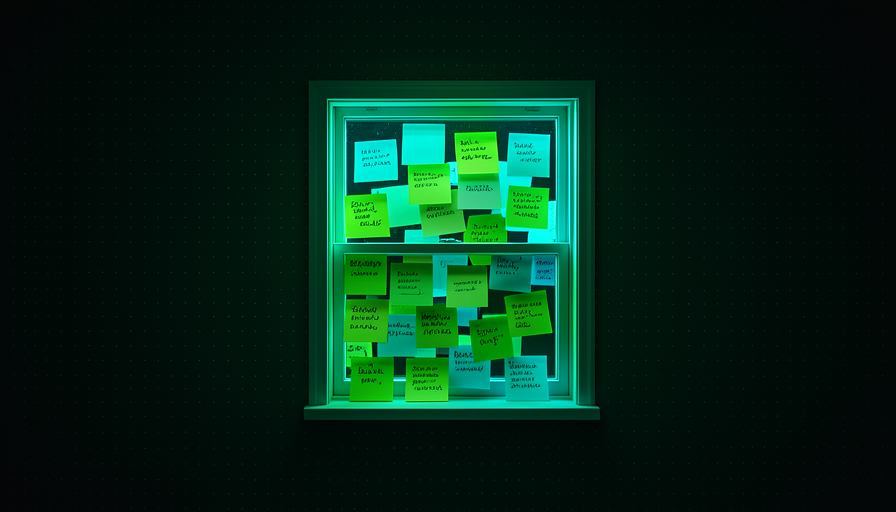
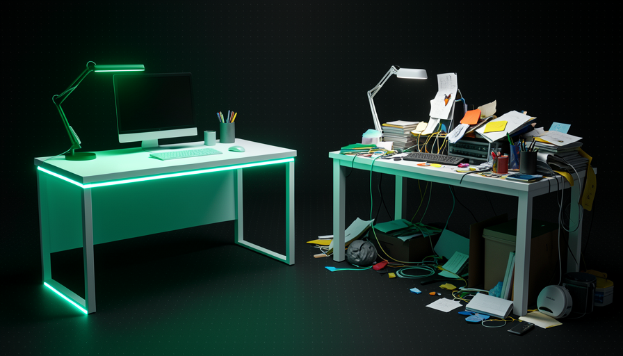
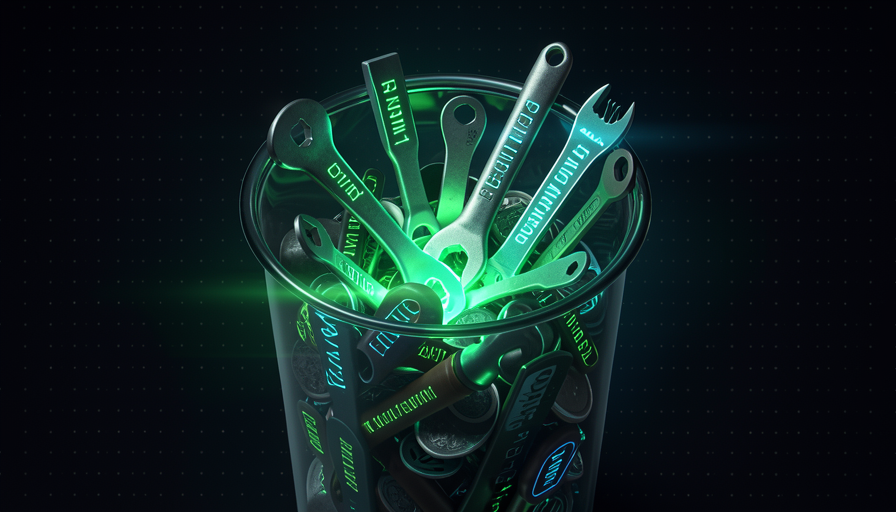

📖 Living glossary (read first — come back whenever you need to)
Since this is the track for Fundamentals, here every term is explained in plain language. These are the new terms in this module:
true) that you enable in a skill to say "only I invoke this, not the model." When enabled, that skill’s description doesn't leak further into context.🫥 What leaks into the context
🧠 Imagine it this way: a worktable. Everything you plan to do today needs to fit on it. If you leave a menu from every restaurant in town scattered across the table—“to eventually choose where to have lunch”—there’s little room left for the real work. The context window is that table: finite, and every sheet takes up space.
AI doesn’t “remember everything”—it can only look at a certain amount of text at a time. That space has a name: context window (context window). It is measured in tokens, and each thing that enters the window—your request, the conversation history, the open files—uses up a slice. The problem is that too much gets in without you noticing.
Pocock’s central example is the skills. Every installed skill has a description — a sentence that says what it’s for. The model uses this sentence to decide whether to use the skill. But for power to decide, it needs see the description all the time. In other words, the description leaks for context even when the skill is never used. In Matt’s words: "every skill leaks its description into the context window." A common beginner mistake is installing dozens of skills “because they might be useful”—and each one takes up its share of the table, whether it’s empty or not.
The more things you stack up, the less room there is for AI to reason (the glowing box).

⚠️ Common beginner mistake
Install everything that looks cool "just in case." Every skill, plugin, and MCP server adds text the AI has to load all the time — even if you never use it. The context keeps growing, and reasoning gets worse.
In one sentence: the context window is finite, and every installed skill leaks its description into it — taking up space even when it isn't used.
Going deeper (optional): why don't "big windows" solve it?
New models have huge context windows (hundreds of thousands of tokens). But more space doesn’t mean better quality: the more crowded the context, the more the AI "gets lost" in the noise, and the slower and more expensive each step gets. The goal isn’t to fill the window—it’s to keep only what matters in it now.
💸 The cost of 100 skills
🧠 Imagine it this way: A kitchen with 100 recipes posted on the wall. Before cooking any dish, the cook has to read the titles of the 100 to choose. If you only make rice, the other 99 just get in the way. Every recipe on the wall demands attention — even the one you never use.
Pocock gives the number that becomes a rule of thumb: "100 skills = 100 descriptions in context". It’s not that each skill is expensive on its own—it’s that the set descriptions is loaded alongside it, every time, so the model knows what's available. You don't even notice ten skills. A hundred skills become a block of text the model has to reread at every step just to decide what to do.
The reason is straightforward: the description exists so the model can be able to invoke the skill alone. If it’s there to be "auto-selected," it has to be visible. Add MCP servers (each one describes its tools), plus CLAUDE.md and the conversation history, and the table fills up before you even ask for anything. The common mistake: treating “I installed it” as “it’s free.” It isn’t—you’re paying in context for something you might use once a month.
Quick recall: why does "100 skills = 100 descriptions in the context"?
In one sentence: "installed" doesn't mean "free" — 100 skills load 100 descriptions onto the table every time the AI thinks.
🔒 disable model invocation
🧠 Imagine it this way: instead of sticking all 100 recipes on the kitchen wall, you keep most of them in a drawer. They’re still there, ready—but they only show up when you opens the drawer and asks for it. The wall stays clear; the view (the context) is yours again.
There’s a switch for this: disable model invocation. Every skill can be one of two types. When the model can choose it on its own; the description has to stay visible (it leaks). When you turn on disable model invocation: true, you say: “this skill only me invoke it.” Practical result: that skill’s description doesn't leak further into context — it disappears from the wall and goes into the drawer.
Pocock gives the example of the skill "engineering zoom out": he marks it as disable model invocation, so the model never calls it on its own—only he, the human, calls it when he wants to. That fits his philosophy: he prefers procedures (that you invoke) a abilities (that the model invokes), because he wants to be “in the driver’s seat,” not delegate the thinking. In his words: "I know my skills, I don't want to delegate my thinking." The common mistake is the opposite: making everything auto-invocable “to be clever” and, as a result, filling the window with descriptions you could have hidden.

🔬 Worked example: hiding a skill
You have a skill "engineering zoom out" that you only use when you want to zoom out from the details and look at the whole system. You don’t want AI to decide to use it on its own. Solution: turn on the switch at the top (frontmatter) of the skill.
--- name: engineering-zoom-out description: Sair do detalhe e revisar a arquitetura do sistema. disable-model-invocation: true # so EU invoco — a description NAO vaza --- # Engineering zoom out 1. Liste os modulos e suas responsabilidades. 2. Aponte acoplamentos e dependencias circulares. 3. Sugira 1 refator que reduz a complexidade do todo.
Result: the skill remains available to you call; but the sentence from the description stopped taking up context at every step of the model.
In one sentence: disable model invocation: true takes the description off the wall and puts the skill in a drawer — only you invoke it, and the context can breathe.
🎈 Instruction bloat
🧠 Imagine it this way: giving a new employee a 300-page manual on their first day, with rules for everything. They drown in the manual and forget today's task. A 1-page card with the 5 rules that matter works much better.
Skills aren’t the only ones to blame. The CLAUDE.md (or agents.md), the MCP servers and the plugins also appear in the window. The bloat is exactly this: too many instructions piled on top of each other. Pocock sums it up in a phrase that serves as a diagnosis: "everyone bloats their context window with too much stuff."
The reason it hurts: each token of instruction is one less token for reasoning—and, worse, contradictory or irrelevant instructions confuse the model. A CLAUDE.md with 50 rules, 45 of which don’t apply to the current task, is noise. The common mistake is to “accumulate”: every time the AI makes a mistake, you add another rule. The manual grows, the results get worse, and you never remove anything. The right direction is the opposite—cut until it hurts and keep only what proves its value.
✓ Lean context
- • Only the skills you actually use.
- • A short CLAUDE.md, with rules that always apply.
- • Hide (in a drawer) what’s rarely used.
✗ Bloated context
- • Everything installed “just in case”.
- • A new rule for every mistake, without ever removing any.
- • MCP servers connected that you don’t even use.
In one sentence: bloat is too many instructions piled up—every manual token is one less token for reasoning.
♻️ The radical reset (preview)
🧠 Imagine it this way: a garage cluttered with years of stuff. The best way to organize it isn’t to handle items one by one—it’s to empty everything in the backyard and only bring back what you actually use. You found out you didn't even need the rest.
Pocock’s most radical recipe for slimming down is two-step reset (you'll see it in full in Track 5). Step 1: delete everything — every skill, every plugin, every MCP server, your CLAUDE.md, agents.md → go back to “absolute zero” and observe the agent work in this basic mode. Its wording is direct: "everyone bloats up their context window with too much stuff." See what the AI does without nothing on top.
Step 2: slowly layered back in — and that are procedures (you invoke), installed in a way that lets you customize and experiment. Bring only what you truly miss (e.g.: the superpowers brainstorming). The logic is like cleaning out a garage: after the reset, you don’t reinstall most of the skills you “thought were essential.” It’s the honest way to find out what was bloat. The common mistake is skipping step 1 — without clearing things out first, you never feel how cluttered it was.

In one sentence: delete everything down to zero, observe the AI “bare,” and only add back what you truly miss.
🧼 Context hygiene
🧠 Imagine it this way: brushing your teeth. It’s not a one-time overhaul — it’s a small, steady habit that prevents a bigger problem. Context hygiene is the weekly maintenance that keeps the desk clean without needing a radical reset all the time.
Wrapping up the module (and Track 1): the golden rule is "each skill costs". Treat the context window as a scarce resource that you actively manage. It’s not just about clearing it once — it’s a habit: audit what leaks in, tuck what’s rarely used away in a drawer with disable model invocation, cut the bloat from CLAUDE.md, and turn off MCP servers you don’t use. Below is the hygiene checklist—copy it and run it every week before starting a major task:
CHECKLIST — context window escasso ("cada skill cobra")
[ ] SKILLS — quantas estao instaladas? Usei cada uma no ultimo mes?
[ ] VAZAMENTO — quais descriptions estao vazando a toa? (some-as)
[ ] GAVETA — as raras estao com `disable model invocation: true`?
[ ] CLAUDE.md — toda regra ainda se aplica? Corte as que nao.
[ ] MCP/PLUGINS — algum ligado que eu nao uso? Desligue.
[ ] RADICAL — se ainda estiver inchado: delete tudo, observe, recame.
Regra: cada item na janela e um item a menos de raciocinio.
Quick retrieval: what is this module's motto about the context window?
In one sentence: context hygiene is the habit of keeping the window clean — every skill costs tokens, so only pay for what you use.
🧾 Module Summary
You completed Track 1! Next track:
Track 2 — Human Skills: what you need to master to get the most out of the harness (AI has already taken over the tactical work; move up to the strategic level).